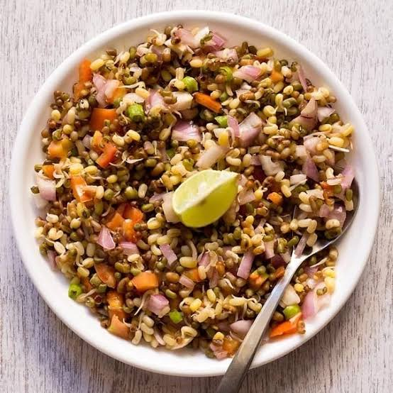

Sprouts Salad Recipe
Fresh, healthy, and packed with nutrients – this sprouts salad is a perfect meal or snack!
Ingredients
1 cup sprouted moong beans
1 cucumber, finely chopped
1 tomato, finely chopped
1/4 cup onion, finely chopped
1/4 cup pomegranate seeds
1 tablespoon lemon juice
1 teaspoon olive oil
1/2 teaspoon chaat masala
1/4 teaspoon black pepper powder
Salt to taste
Fresh coriander leaves for garnishing

You can watch this video for reference.
Instructions
In a large mixing bowl, combine the sprouted moong beans, chopped cucumber, tomato, and onion.
Add the pomegranate seeds and fresh coriander leaves to the bowl.
In a small bowl, mix together the lemon juice, olive oil, chaat masala, black pepper, and salt.
Pour the dressing over the salad and toss well to combine.
Garnish with extra coriander leaves and serve fresh!
Enjoy Your Healthy Sprouts Salad!